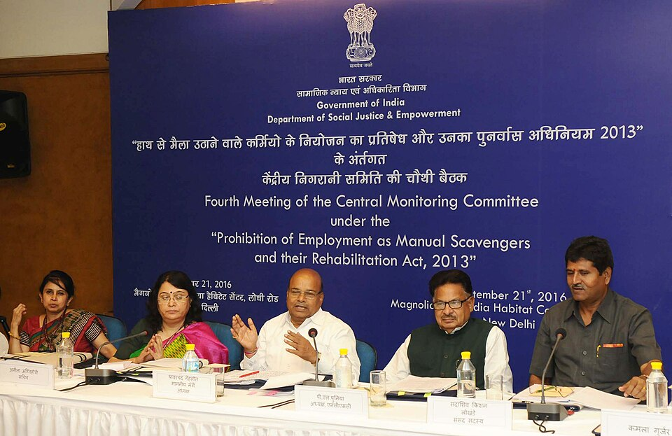
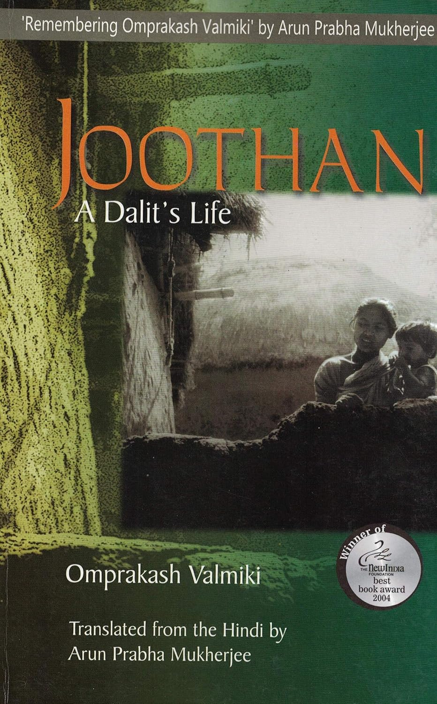

Caste and the assignment of who cleans
Manual scavenging in India was never distributed the way work usually is. It did not go to whoever needed a job. It went, and in places still goes, to specific Dalit sub-castes who were born into it — an inherited obligation rather than an occupation entered by choice.
That distinction decides everything that follows in this exhibit. A statute can void an employment contract. It has a much harder time voiding an inheritance. The 1993 and 2013 Acts both address the relationship between an employer and a worker; the mechanism they are trying to break is closer to an assignment made at birth and enforced by everyone in the village who is not doing the work. Understanding this layer first is what makes the legal, systemic and technological layers legible as responses to something considerably older than any of them.
The work had names before it had a job description
There is no single caste that scavenges. Across the country, the communities assigned to handle human waste carry different names, and almost all of them are used as slurs: in the north, Bhangi, Balmiki, Chuhra, Halalkhor, Lal Begi and Mehtar; in the east, Dom, Hari, Hadi, Hela; in the south, Thoti, Arunthathiyar, Chachati, Pakay and Relli, among others. What they share is position — each is placed at the bottom of the Dalit category itself, subject to untouchability practised even by other Dalit communities.1
The obligation was not informal. It was held as a customary claim, recorded by mid-century government inquiries under local names — gharaki, gharagi, jajmani, virat, dastoori — under which particular families were tied to particular households or streets and could be transferred, in effect, along with the property. The Malkani committee documented these claims in the 1960s and recommended that they be extinguished, precisely because a customary right made the work heritable rather than contractual.2
Safai karamchari — the official and everyday Hindi term for a sanitation employee; it covers sweepers, drain cleaners and manual scavengers together, which is part of why counting them separately is so difficult.
Insanitary latrine — a latrine from which excreta must be handled manually before it decomposes. Its existence, not anyone's intent, is what creates a manual scavenger in law.
Night soil — the colonial-era euphemism for human excreta collected and carried away by hand, usually at night. The word itself encodes the requirement that the work be invisible.3

Independence did not interrupt the assignment
The first official inquiries after independence treated scavenging as a welfare problem: better wages, better housing, better tools. The Barve Committee in Bombay in 1949 examined living conditions and minimum wages for scavengers. The Kalelkar Commission, reporting in the mid-1950s, described their condition as sub-human and pressed for mechanical methods of latrine cleaning. Malkani's report in 1961 recommended underground drainage and improved latrines. Each accepted the premise that the labour would continue, and asked only that it be made less degrading.4
The reformist consensus of the period is visible in the most famous disagreement about it. Gandhi made scavenging central to his moral programme, insisted that caste Hindus perform it themselves, and described the work as a service deserving reverence rather than an assignment deserving abolition. Ambedkar rejected the framing outright. For him the problem was not that society failed to honour the scavenger; it was that a community had been condemned to the work by birth. Caste, in his formulation, was not a division of labour but a division of labourers, ranked — which is why he argued that dignifying the task would leave the hierarchy that produced it perfectly intact.5
The argument Ambedkar made in the 1930s is the argument this exhibit is still testing: you cannot make an inherited obligation acceptable by improving its conditions. You can only end the inheritance.
Photography, not legislation, made the inheritance visible
For most of the twentieth century the work was documented mainly in committee reports written for administrators. What changed public reception was photography and testimony from inside the communities themselves.
In Search of Dignity and Justice: The Untold Story of Mumbai's Conservancy Workers
Sudharak Olwe, photographic series, 1999–2000 onward. Copyright: Sudharak Olwe. Linked, not reproduced.
The series follows Brihanmumbai Municipal Corporation conservancy workers through the labour their communities have been assigned for generations. One widely discussed frame shows a worker, identified only as Parmar, descending into a manhole without protective clothing while two colleagues work the opening beside him; a bucket, a chain and a few crude rods are the only visible equipment.6
→ view the series (Galli Magazine)Olwe is himself from the Dalit community, which shapes the images as testimony from someone with standing inside the world he documents rather than an outsider collecting spectacle.7 The series has been exhibited in Delhi, Amsterdam, Lisbon and Los Angeles, and is credited with prompting Mission Garima, a 2014 rehabilitation partnership between Mumbai's municipal corporation and the Tata Trusts.8 That is a rare instance of an aesthetic object measurably moving policy — and the question worth pressing is why photographs achieved in a decade what two decades of statute had not. One answer is that a photograph cannot be satisfied by a definition. A ministry can report that no manual scavengers exist; it cannot report that the man in the manhole is not there.

Joothan: A Dalit's Life
Om Prakash Valmiki, Hindi, 1997; English translation by Arun Prabha Mukherjee, 2003.
Valmiki's memoir records a childhood in a Chuhra settlement in western Uttar Pradesh where sanitation labour, food scarcity and schooling humiliation are a single continuous experience rather than separate hardships. The title refers to leftover scraps from others' plates. Its value as an object for this exhibit is that it documents the assignment from the inside and across an ordinary life — not at the moment of a death, which is when the press usually arrives.9
→ about the bookRead alongside Olwe, Joothan supplies what the photographs cannot: the reasoning of the people inside the frame, and the point at which a child understands that the work is meant to be his. It is also evidence about the exit route. Valmiki left sanitation labour through education and government employment — the precise combination that the rehabilitation provisions of the 2013 Act would later promise, and largely fail, to deliver at scale.

Kakkoos
Directed by Divya Bharathi, Tamil, 109 minutes, released 27 February 2017. Linked, not reproduced.
Filmed across Tamil Nadu in 2015–16, the documentary follows sanitation workers and their families and records the circumstances of workers who died in sewers and septic tanks. It takes its title from a word a child gave the director as her own name, having absorbed it from what people around her called her. The film was denied theatrical screenings in several districts and released on YouTube instead, and the director reported receiving threats.10
→ about the filmBharathi has said she wanted the film to produce anger rather than pity — a deliberate refusal of the sympathy register that reform-era reporting had settled into.11 The obstruction of its screenings is itself part of the historical record this exhibit is assembling: the reaction was not to the practice but to its documentation, which is a recurring pattern from the Barve committee onward.
Who was actually doing the work
The hereditary assignment was also a gendered division, and it maps onto the two very different kinds of sanitation labour. Cleaning dry latrines inside homes was overwhelmingly done by women, often for a few rupees a month or payment in leftover food. Entering sewers and septic tanks — the labour that kills — was and remains done almost entirely by men, for daily wages.12 This matters for the numbers: as dry latrines were converted and household scavenging receded from view, the visible face of the problem shifted from women in villages to men in municipal manholes, while the caste composition did not change at all. Of the 43,797 identified manual scavengers for whom the government holds caste data, over 97 per cent are from the Scheduled Castes.13
The scale of the inheritance at the moment the second prohibition was written is worth stating plainly. The Census of 2011 counted around 26 lakh insanitary latrines, and 7,40,078 households where human excreta was removed by another human being. The Socio Economic and Caste Census the same year recorded 1,82,505 manual scavengers in rural India alone. Against that, the two official surveys conducted in 2013 and 2018 identified 58,098 people in total.14 The gap between those figures is not a rounding error; it is the historical layer meeting the administrative one, and losing.
What this layer establishes
Three things carry forward into the rest of the exhibit. First, the labour arrived as an ascribed duty, which is why prohibition targeted at employment keeps missing it. Second, every reform before 1993 sought to improve the work rather than abolish the assignment, and the institutional habits formed in those decades did not disappear when the language changed. Third, the communities doing the work were made visible by their own photographers, writers and film-makers before they were counted properly by the state — and on the evidence of the surveys, they still have not been.
← Back to all exhibits